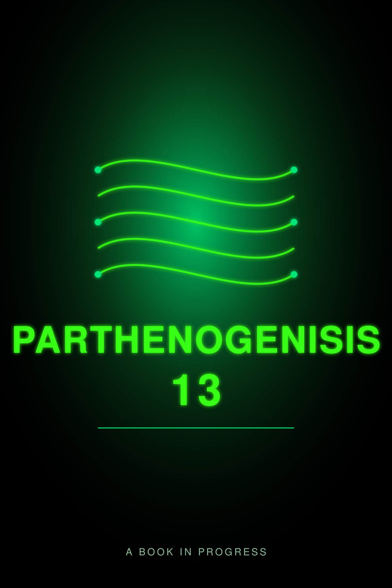

Now playing:
Audio for this chapter isn’t available yet. The text is below.
Draft. The text is the author’s and has not been fact-checked. The narration is generated with Kokoro, an open-source voice model.

Audio for this chapter isn’t available yet. The text is below.
Draft. The text is the author’s and has not been fact-checked. The narration is generated with Kokoro, an open-source voice model.